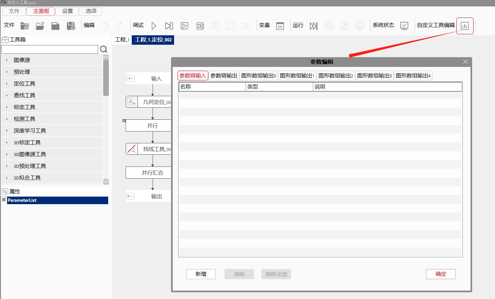

自定义工具是一种特殊工具，它可以根据用户需要由用户自定义封装一组工具集合来完成用户需要的功能，用户可以将其作为一种特殊工具在工程中使用。同时，自定义工具还支持导入导出功能，以支持自定义工具跨软件，跨解决方案使用。
1.在复杂的工业视觉解决方案中，通常有同样的一组工具集合在流程图中多处使用，导致工程开发，调试，维护工作量较大，自定义工具可以很好的解决这一问题。
2.在行业应用开发过程中，通常会有一些完成共性功能的工具集合在不同的解决方案都有使用，通过自定义工具导入导出功能，可以使这些共性功能一次开发，多处复用，有效的提升开发效率。
自定义工具主要包含输入参数，输出参数，内部流程图工具组成。自定义工具和普通工具类似，可以链接参数链，并执行。自定义工具没有属性参数。
1.流程图中自定义工具右键菜单单击编辑
2.编辑自定义工具
注意有部分工具不支持在自定义工具内部使用，具体请参见后面常见问题章节不支持工具列表。
输入参数由用户自定义配置，支持图像类型数据(scImage8, scImage24, scRangeImange16, Measure3D::GsProfileData), 基本数据类型(bool, float, double, int, string等)的参数配置，最多支持配置50个输入参数。
1.输入参数配置

2.输出参数配置
自定义工具内部任意工具的输出参数都可以配置为自定义工具的输出参数。最多支持配置50个输出参数。
3.图形数组输出参数配置
自定义工具内部任意工具的图形输出参数都可以添加到自定义工具的图形数组输出中。最多支持配置5个图形数组输出参数。每个图形分组最多可以添加2000个，非脚本工具可以添加1000个，脚本工具可以添加1000个。
注意：使用脚本添加的GUI，只有在脚本执行过后，才会在图形数组输出列表中显示；而且，这些GUI不支持使用“删除”或者“删除全部”按钮进行删除，只能修改或者注释掉脚本工具的相关代码。
配置好自定义工具的输入输出参数后，即可以在主程中配置自定义工具的参数链接。方式同普通工具。
在给自定义工具配置完参数链后，即可运行自定义工具。如果自定义工具内部所有工具执行成功，认为自定义工具本身运行成功。如果自定义工具内部有工具执行失败，则认为自定义工具本身运行失败。
在主工程单步执行调试时，执行到自定义工具图元后，单步执行会开始执行自定义工具内部的工具，这时在自定义工具图元上单击右键菜单编辑选项进入自定义工具编辑界面，即可进入到自定义工具编辑界面，查看内部各工具单步执行情况。另外在自定义工具编辑界面，也可以直接启动调试或运行，但这时使用的输入参数数据是上次执行时缓存的数据。
选中自定义工具，右键菜单中，选择导入导出->导出工具信息，即可导出自定义工具的信息。
选中自定义工具，右键菜单中，选择导入导出->导入工具信息，即可导入自定义工具的信息，旧的内数据被清除，根据导入的gves文件重新创建内部数据。注意，此工具和与之相关的工具的参数可能会被断开。
如果自定义工具内部添加了工具，会弹出自定义工具更新数据配置窗口，需要选择更新数据的工具。如果某些工具想要更新数据，勾选“使用B表数据”复选框，不勾选的话保留导入之前的工具数据。点击"确定"按钮的话，最新配置会被保留，并按照最新配置进行导入；点击“取消”按钮的话，修改的配置不会被保留，同时按照旧的配置进行导入。
注意：更新数据的工具只有名称相同的才需要配置，名称不同的使用gves文件中的数据；如果导入之前的工具数据影响流程图的参数链，即参数链的启用/禁用，可能出现自定义工具执行错误，需要手动修改此类型的工具参数；脚本工具不建议保留旧数据。
选中自定义工具，右键菜单中，选择导入导出->更新工具信息，即可更新自定义工具的信息，旧的内数据被清除，根据导入的gves文件重新创建内部数据。注意，gves文件中的ID必须与被更新的工具ID一致，而且，参数个数和签名完全一致时，才会更新成功，目前此功能只用于批量复制。
选中流程图中一段流程，右键点“转换为自定义工具”，可快速生成自定义工具。生成自定义工具后，选中的流程将被删除，自定义工具替换到相同的位置，转换之后不支持撤销，每次转换之前，最好先备份工程。
选中流程需要满足以下需求，才可以转换成自定义工具，否则会提示无法完成转换：
（1）选中工具或图元必须大于等于两个，工具数必须小于等于100个；
（2）选中流程中不能包含自定义工具；
（3）选中流程中不能包含自定义工具不支持的工具，具体工具见常见问题中自定义工具不支持工具列表；
（4）选中流程中不能包含创建失败、损坏、状态异常的工具；
（5）选中流程中不能包含被折叠、加密的工具，组合要展开（转换后组合框线被删除）。
当脚本、表达式、文本生成工具被选中，但其访问的参数所在工具未被选中时，转换后脚本、表达式、文本生成工具将访问不到参数，会弹出提示，转换后脚本、表达式、文本生成工具会报错；当脚本、表达式、文本生成工具、数据输出工具未被选中，但其访问的参数所在工具被选中时，转换后脚本、表达式、文本生成工具、数据输出工具也将访问不到参数，会弹出提示，转换后脚本、表达式、文本生成工具、数据输出工具会报错。建议脚本、表达式、文本生成工具被选中时，同时选中其访问的工具，这样不会出现转换后无法访问的问题。否则只能在转换后手动修改。
选中工具的参数链链接了变量，或选中的脚本、表达式、数据输出工具访问了变量时，将自动生成自定义工具的参数链，自动链接所访问的变量；在自定义工具内部，生成的参数链会替代变量。当脚本或表达式修改变量值时，转换后会提示将新生成的自定义工具参数赋值给指定变量。
注意事项
图像源 图像源配置 图像采集工具 图像源工具 图像文件 图像文件夹 图像保存工具 屏幕截图工具 多图拼合保存工具
通信工具 通信接收工具 通信发送工具 通信端口状态获取工具
配置工具 光源控制工具 单相光源控制工具 数据收集工具 数据库更新工具 数据库查询工具 数据库数组查询工具 数据库查询统计工具 相机工作模式设置工具 生产数据收集工具 相机参数设置工具 相机状态恢复工具
显示与格式化工具 文件夹创建工具 视图清空工具 消息报告工具 Excel文件创建工具 TXT文本写入工具 数据输出工具 数据来源配置工具 图形数组生成工具 Excel模板数据写入工具 MDB数据存储工具 文件解析导入工具
3D工具 3D图像采集工具 3D相机设置工具 3D格式转换工具 多传感器拼接工具 标准CAD模型比对工具
其他 批处理命令执行工具 DI输入工具 DO输出工具
深度学习工具 分类测试工具 分割测试工具 检测测试工具
用户自定义
默认有执行时间和执行结果。其他由用户自定义。
参见“\Samples\自定义工具.gvp”。